The stark majority of preprocessing was performed using Deepnote as the collaboration platform.
The first step involves cleaning up the raw data which contained columns unnecessary for
data analyses.
import pandas as pd
path = "Dataset - Group 40 - Data.csv"
raw_data = pd.read_csv(path, header=0)
# Drop empty entries
dengvaxia_data = raw_data.drop("ID", axis=1) # Drop early to help in dropping rows
dengvaxia_data.dropna(how="all", inplace=True)
# Drop unnecessary features
dengvaxia_data.drop([
"Timestamp",
"Tweet URL",
"Group",
"Collector",
"Category",
"Topic",
"Keywords",
"Account handle",
"Account name",
"Account bio",
"Location",
"Tweet Translated",
"Screenshot",
"Quote Tweets",
"Views",
"Reasoning",
"Remarks",
"Add columns here",
"Add columns here.1",
"Add columns here.2",
"Reviewer",
"Review",
], axis=1, inplace=True,)
list(dengvaxia_data)
We then checked for missing values in each of the columns.
The only one with missing data was the Account type column. This was fixed by simply
filling the missing value with 'Anonymous'
# Prints out missing values
for i in dengvaxia_data.columns:
print("Number of missing data in", i + ":", dengvaxia_data[i].isnull().sum())
# Fill missing Account Type entries with 'Anonymous'
dengvaxia_data["Account type"].fillna("Anonymous", inplace=True)
Number of missing data in Joined: 0
Number of missing data in Following: 0
Number of missing data in Followers: 0
Number of missing data in Tweet: 0
Number of missing data in Tweet Type: 0
Number of missing data in Date posted: 0
Number of missing data in Content type: 0
Number of missing data in Likes: 0
Number of missing data in Replies: 0
Number of missing data in Retweets: 0
Number of missing data in Rating: 0
Format Consistency
We then performed data validation by ensuring that every entry in each column has the
correct data type.
This involved converting all the date strings into datetimes and all the numerical counts
into integers.
We decided to handle outliers for the columns 'Likes', 'Replies', 'Retweets', 'Following', 'Followers',
and 'Date posted', as outliers from these columns will most likely skew the dataset during the modeling phase.
Recall that we can detect outliers using Z-scores or Interquartile Range (IQR).
Z-scores, however are only effective on normally distributed data while IQR works well for skewed data.
Hence, it is important to first visualize the distributions for the aforementioned columns.
The code block below plots the data of each column to a histogram.
import seaborn as sns
import matplotlib.pyplot as plt
sns.set_theme()
# Displays histogram of a column
def check_dist_col(column):
plt.figure(figsize=(16, 5))
plt.subplot(2, 1, 1)
sns.histplot(dengvaxia_formatted[column], kde=True)
plt.show()
# Displays histogram of a column using their index
def check_dist(i):
plt.figure(figsize=(16, 5))
plt.subplot(2, 3, i + 1)
sns.histplot(dengvaxia_formatted[columns[i]], kde=True)
plt.show()
# Display histograms for the aforementioned columns
columns = ["Likes", "Replies", "Retweets", "Following", "Followers", "Date posted"]
for i in range(len(columns)):
check_dist(i)
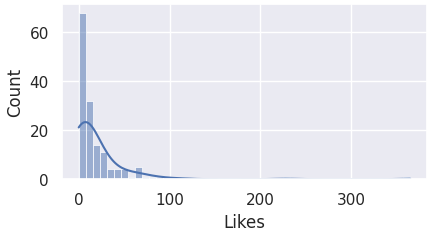
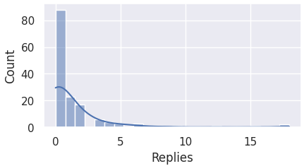
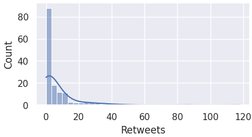
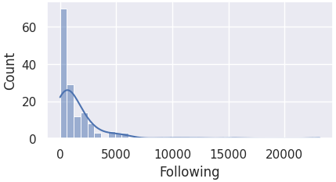
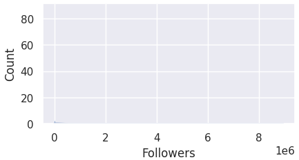
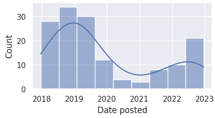
Here we observe that most of the columns are skewed to the left, and not normally distributed.
For this reason, we must perform IQR for detecting outliers.
Before that, however, there seems to be a blank histogram for the 'Followers' column.
Let's take a closer look using the describe() function.
The account with 8944169 followers severely skewed the data as the other values are relatively extremely small,
causing the histogram for 'Followers' column to be seemingly blank. The gap between the maximum value and the rest is extremely huge.
We will take a look at this again when we finally handle the outliers.
Handling Outliers: Detecting Outliers
Recall that in box plots, any data point outside its whiskers, i.e. 1.5 times the interquartile range
above the upper quartile and below the lower quartile (Q1 - 1.5 * IQR or Q3 + 1.5 * IQR), is an outlier.
For easier execution of detecting outliers for different categories, we create a function that takes in a column of the dataset as its parameter.
import matplotlib.pyplot as plt
import seaborn as sns
import numpy as np
import plotly.express as px
def visualize_outlier(column):
# Display boxplot
sns.boxplot(dengvaxia_formatted, y=column, orient="v").set(xlabel=None, ylabel=column)
# Find q1 and q3 values
q1, q3 = np.percentile(sorted(dengvaxia_formatted[column]), [25, 75])
print(f"Lower quartile (Q1): {q1}")
print(f"Higher quartile (Q3): {q3}")
# Compute IRQ
iqr = q3 - q1
print(f"IQR: {iqr}")
# Find lower and upper bounds
lower_bound = q1 - (1.5 * iqr)
upper_bound = q3 + (1.5 * iqr)
outliers = [x for x in dengvaxia_formatted[column] if x <= lower_bound or x >= upper_bound]
# Display results
print(f"Outliers: {outliers}")
print(f"Number of outliers: {len(outliers)}")
return outliers
There are no outliers for 'Date posted'. This means that we no longer need to handle outliers for this column.
Handling Outliers: Imputing the Outliers
There are many ways to deal with outliers. In this project, since most of the columns are heavily skewed,
and there are outliers that have an immense gap from the rest of the data, we decided that the best way to deal
with these outliers is by imputing them with the median of that column. This is because medians
are robust against, and are not easily affected by outliers.
With that, we now perform replacing the outliers for the aforementioned columns with the exception of 'Date posted'.
# Impute outliers for 'Likes'
for outlier in likes_outliers:
dengvaxia_formatted["Likes"] = dengvaxia_formatted["Likes"].replace(
outlier, np.median(dengvaxia_formatted["Likes"]))
# Impute outliers for 'Replies'
for outlier in replies_outliers:
dengvaxia_formatted["Replies"] = dengvaxia_formatted["Replies"].replace(
outlier, np.median(dengvaxia_formatted["Replies"]))
# Impute outliers for 'Followers'
for outlier in retweets_outliers:
dengvaxia_formatted["Retweets"] = dengvaxia_formatted["Retweets"].replace(
outlier, np.median(dengvaxia_formatted["Retweets"]))
# Impute outliers for 'Followers'
for outlier in following_outliers:
dengvaxia_formatted["Following"] = dengvaxia_formatted["Following"].replace(
outlier, np.median(dengvaxia_formatted["Following"]))
# Impute outliers for 'Followers'
for outlier in followers_outliers:
dengvaxia_formatted["Followers"] = dengvaxia_formatted["Followers"].replace(
outlier, np.median(dengvaxia_formatted["Followers"]))
# Display updated histograms
columns = ["Likes", "Replies", "Retweets", "Following", "Followers"]
for i in range(len(columns)):
check_dist(i)
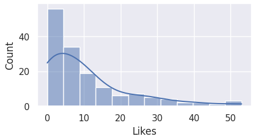
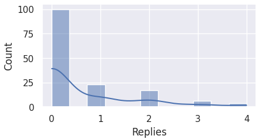
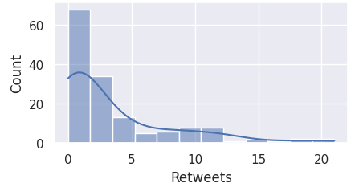
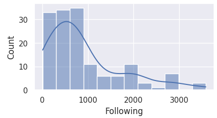
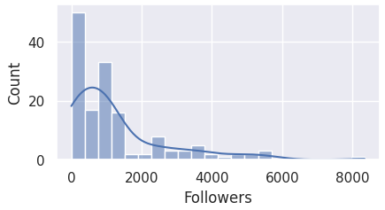
Normalization
Now that outliers have been dealth with, normalizing the data for these columns will now result to a more feasible and justifiable model.
This was done using sklearn's MinMaxScaler.
from sklearn.preprocessing import MinMaxScaler
dengvaxia_scaled = dengvaxia_formatted.copy(deep=True)
scaler = MinMaxScaler()
# Normalizes column using the MinMaxScaler
def normalize(column):
dengvaxia_scaled[[column]] = scaler.fit_transform(dengvaxia_scaled[[column]])
# Normalize all numerical columns
numerical_columns = ["Likes", "Replies", "Retweets", "Following", "Followers"]
for column in numerical_columns:
normalize(column)
# Display changes
unscaled_columns = dengvaxia_formatted[numerical_columns]
scaled_columns = dengvaxia_scaled[numerical_columns]
print(unscaled_columns.head(10))
print(scaled_columns.head(10))
To make categorical data usable in analysis, it must converted into integer values through encoding. One hot encoding is used since our categorical data are nominal.
For the column 'Tweet Type' which can take on several different values at the same time, a manual encoding
was performed to separate each type in their own columns.
import numpy as np
# Using one-hot encoding to encode the Content type and Rating features
dengvaxia_encoded = pd.get_dummies(dengvaxia_scaled, prefix=['content-type', 'rating'],
columns=['Content type', 'Rating'])
# Encodes columns that can have multiple categories
def encode_multicategory(df, column, category):
return np.where(df[column].str.contains(category), 1, 0)
# Manually encoding the Tweet Type feature
dengvaxia_encoded['Tweet Type'] = dengvaxia_encoded['Tweet Type'].str.lower()
dengvaxia_encoded['tweet-type_Text'] = encode_multicategory(dengvaxia_encoded, 'Tweet Type', 'text')
dengvaxia_encoded['tweet-type_Image'] = encode_multicategory(dengvaxia_encoded, 'Tweet Type', 'image')
dengvaxia_encoded['tweet-type_Video'] = encode_multicategory(dengvaxia_encoded, 'Tweet Type', 'video')
dengvaxia_encoded['tweet-type_URL'] = encode_multicategory(dengvaxia_encoded, 'Tweet Type', 'url')
dengvaxia_encoded['tweet-type_Reply'] = encode_multicategory(dengvaxia_encoded, 'Tweet Type', 'reply')
dengvaxia_encoded.drop('Tweet Type', axis=1, inplace=True)
# Display changes
print(dengvaxia_scaled.columns) # Columns before encoding
print(dengvaxia_encoded.columns) # Columns after encoding
We start off by cleaning up the tweet contents.
To help in standardizing the tokens for NLP, we opted to translate all the tweets to English.
Unnecessary data such as emojis, URLs, and @mentions are also removed in this step.
The googletrans package was used to translate the tweets.
# Note: googletrans 3.1.0a0 is already installed
from googletrans import Translator
import re
import string
dengvaxia_nlp = dengvaxia_encoded.copy()
tweets_raw = dengvaxia_nlp['Tweet'].tolist()
# Remove mentions
def removeMentions(text):
return re.sub(r'@\S+', '', text)
tweets_clean = [removeMentions(t) for t in tweets_raw]
# Remove URLs
def removeURLs(text):
return re.sub(r'http\S+', '', text)
tweets_clean = [removeURLs(t) for t in tweets_clean]
# Remove emojis
url_emoji = "https://drive.google.com/uc?id=1G1vIkkbqPBYPKHcQ8qy0G2zkoab2Qv4v"
df_emoji = pd.read_pickle(url_emoji)
df_emoji = {v: k for k, v in df_emoji.items()}
def removeEmojis(text):
for emot in df_emoji:
text = re.sub(r'('+emot+')', "", text)
return text
tweets_clean = [removeEmojis(t) for t in tweets_clean]
# Remove emoticons
url_emote = "https://drive.google.com/uc?id=1HDpafp97gCl9xZTQWMgP2kKK_NuhENlE"
df_emote = pd.read_pickle(url_emote)
def removeEmoticons(text):
for emot in df_emote:
text = re.sub(u'('+emot+')', "", text)
text = text.replace("<3", "" ) # not included in emoticons database
return text
tweets_clean = [removeEmoticons(t) for t in tweets_clean]
# Translate tweets to english
translator = Translator()
tweets_en = [t.text for t in translator.translate(tweets_clean, src='tl', dest='en')]
dengvaxia_nlp['Tweet'] = tweets_en
# Display results
changes = pd.DataFrame({'Raw Tweet': tweets_raw, 'Cleaned Tweet': tweets_en})
changes.style.set_properties(**{"text-align": "left", "max-width": "400px", "white-space": "normal"})
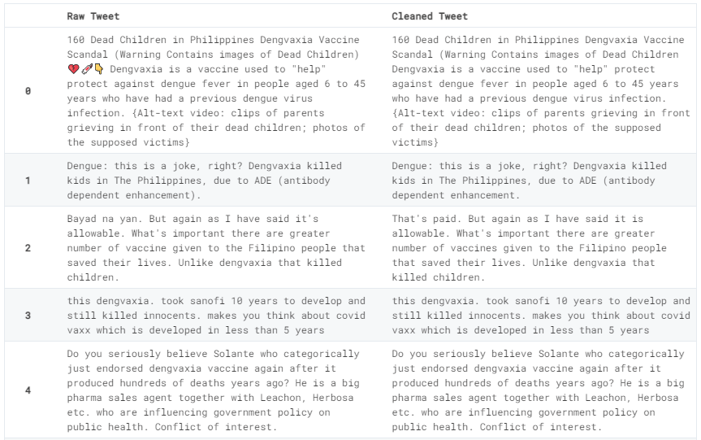
NLP: Tokenization and Stopwords
Tokenization is done to separate the tweets into smaller pieces called tokens. Here, we chose tokens to be words.
Additionally, stop words are removed since they carry little to no information during analysis.
The nltk package's stopwords and word_tokenize functions were used to facilitate this.
# Data for removing stop words and punctuations
from nltk.downloader import download
download("punkt")
download("stopwords")
from nltk.corpus import stopwords
from nltk.tokenize import word_tokenize
tweets = dengvaxia_nlp["Tweet"].tolist()
# Convert to lowercase
tweets = [t.lower() for t in tweets]
# Remove punctuation
tweets = [t.translate(str.maketrans("", "", string.punctuation)) for t in tweets]
tweets_tokenized = []
for tweet in tweets:
# Tokenize the text into words
words = word_tokenize(tweet)
# Remove stopwords
filtered_words = [
word for word in words if word.lower() not in stopwords.words("english")
]
# Convert back into sentence
filtered_sentence = " ".join(filtered_words)
tweets_tokenized.append(filtered_sentence)
dengvaxia_nlp["Tweet"] = tweets_tokenized
# Display results
changes = pd.DataFrame({"Tweet": tweets_en, "Tokens": [t.split() for t in tweets_tokenized]})
changes.style.set_properties(**{"text-align": "left", "max-width": "400px", "white-space": "normal"})
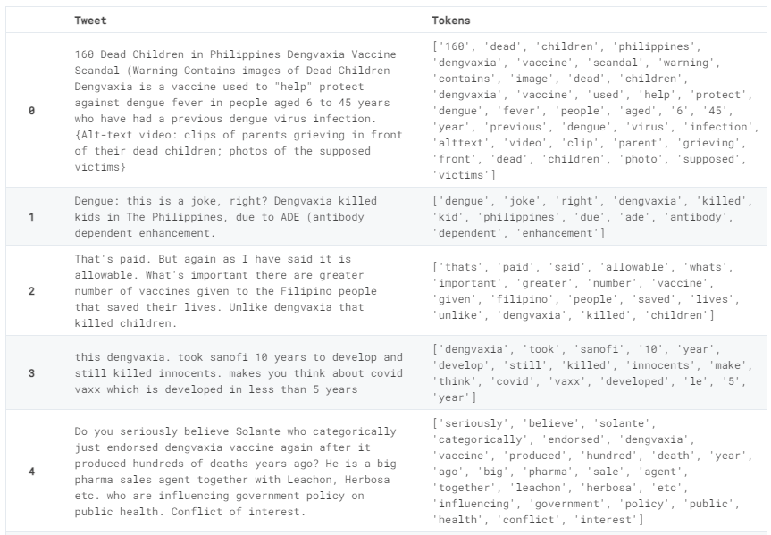
NLP: Lemmatization
Since stemming gets rid of a lot of information which results in inaccurate root words,
we decided to perform the more costly but more accurate lemmatization.
The nltk package's WordNetLemmatizer was used to facilitate this.
from nltk.stem import WordNetLemmatizer
download("wordnet")
download("omw-1.4")
# Initialize the Lemmatizer
lemmatizer = WordNetLemmatizer()
tweets = dengvaxia_nlp["Tweet"].tolist()
tweets_lemmatized = []
for tweet in tweets:
words = tweet.split()
# Lemmatize each word
lemmatized_words = [lemmatizer.lemmatize(word) for word in words]
# Convert back into sentence
lemmatized_sentence = " ".join(lemmatized_words)
tweets_lemmatized.append(lemmatized_sentence)
dengvaxia_nlp["Tweet"] = tweets_lemmatized
# Display results
changes = pd.DataFrame(
{"Tokens": tweets, "Lemmatized": [t.split() for t in tweets_lemmatized]}
)
changes.style.set_properties(**{"text-align": "left", "max-width": "400px", "white-space": "normal"})
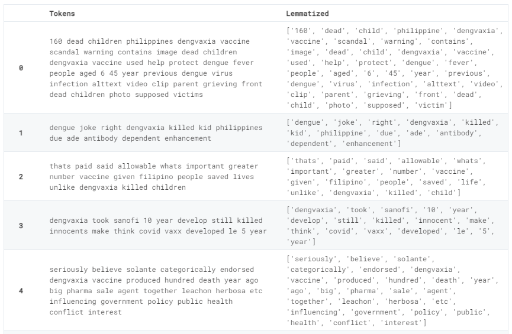
Preprocessing finished
With that, the entire Data Preprocessing phase is complete.
What follows next is the Data Visualization.
We'd like to hear from you.
You can add more information about the team members here.